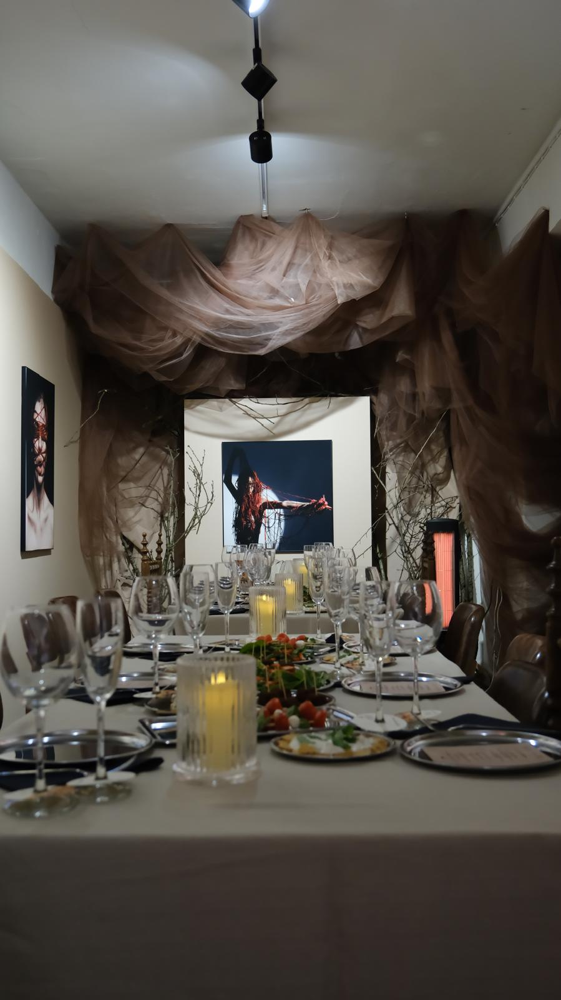
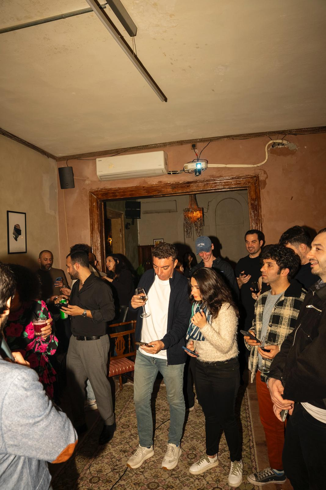
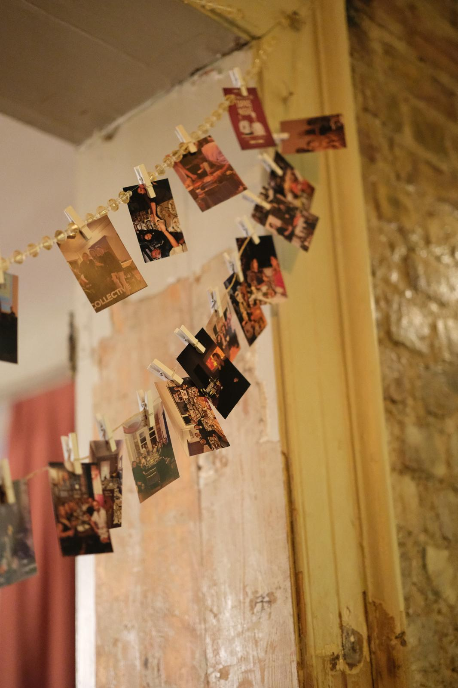
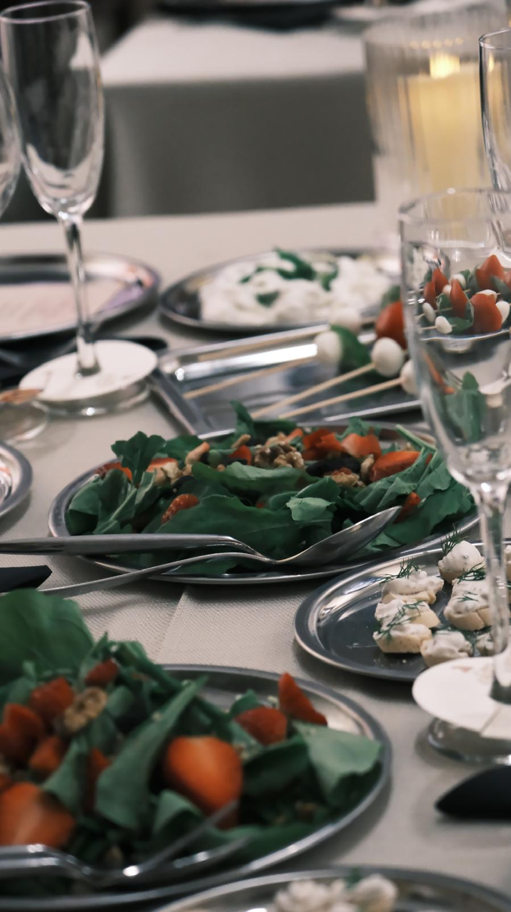
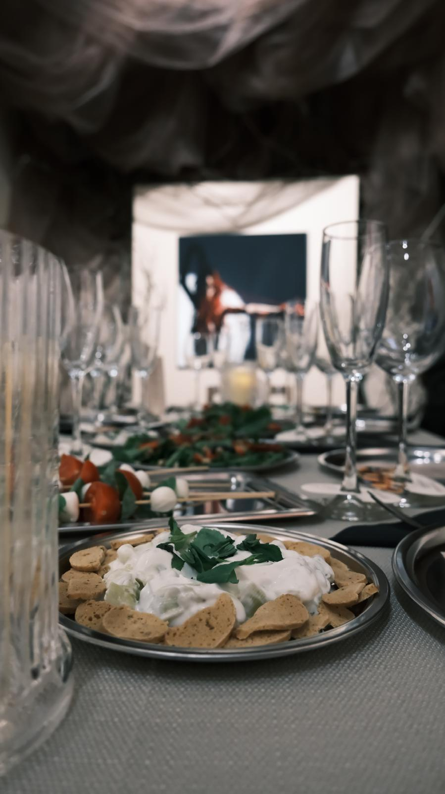
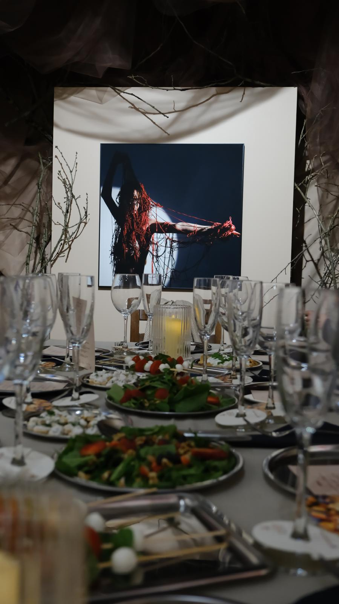
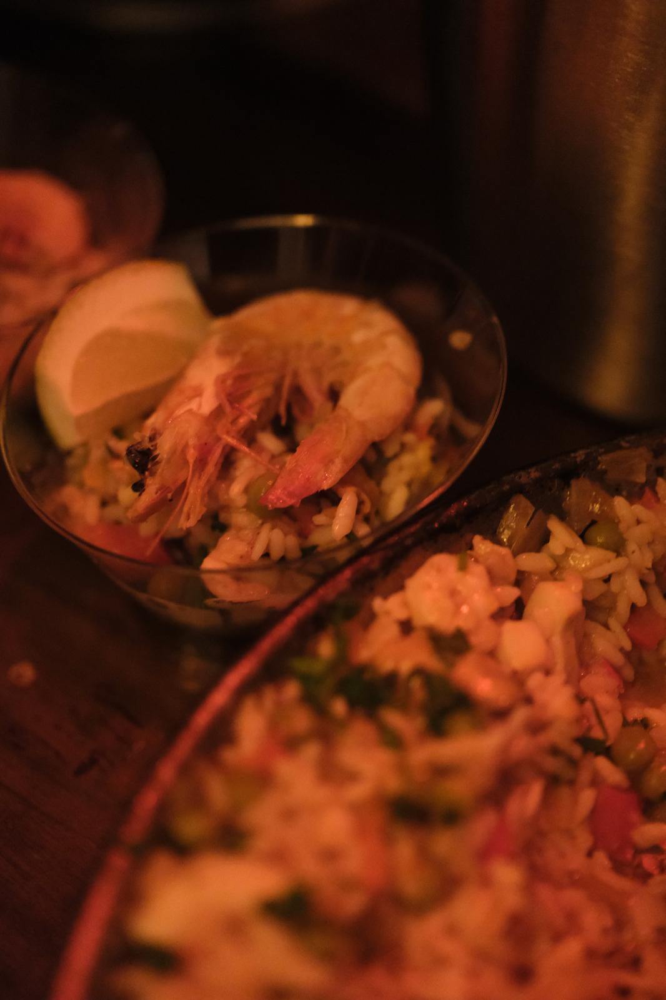

Deneyimin ve yaratıcılığın buluşma noktası.
Gastronomi, sanat ve yaratıcı fikirleri bir araya getiren; sıradanlıktan uzaklaşarak anıları zenginleştiren özgün deneyimler.

Sıradanlıktan uzaklaşarak, anıları zenginleştiren deneyimler.
Muka; gastronomiyi, yaratıcılığı, sanatı ve insanları aynı deneyimin etrafında buluşturur. Her buluşmayı yalnızca katılınan bir etkinlik değil, hatırlanacak bir ana dönüştürmeyi amaçlar.
Disiplinlerin sınırlarını kaldıran, duyuları harekete geçiren ve her detayı incelikle tasarlanan bütünsel bir buluşma kültürü.
Muka'da Neler Var?
Farklı ilgi alanlarını, insanları ve hikâyeleri aynı yerde buluşturan deneyimler.
Gastronomi & Tadım
Lezzeti hikâyesiyle keşfeden, ustalık ve sohbeti aynı masaya taşıyan deneyimler.
Yaratıcı Atölyeler
Ellerle üretmenin dinginliğini ve özgün nesneler tasarlamanın keyfini yaşatan buluşmalar.
Sanat & Medya
Görsel hikâye anlatıcılığı, sahne sanatları ve kültür buluşmalarıyla ilham veren saatler.
Özel & Kurumsal Deneyimler
Ekip bağlarını güçlendiren, kurumlara ve özel günlere terzi işi tasarlanan konsept buluşmalar.

Sadece bir etkinlik değil. Paylaşılan bir deneyim.
Yavaşlamanın, paylaşmanın ve yan yana gelmenin hali.
Yaklaşan Deneyimler
Size özel ilham veren deneyimler tasarlıyoruz.
İster sevdiklerinizle paylaşacağınız özel bir buluşma, ister ekibinizi bir araya getirecek kurumsal bir deneyim, ister markanıza özel yaratıcı bir etkinlik… Muka, fikrinizi özgün bir deneyime dönüştürür.

Muka'dan Kareler




Muka Hakkında
Muka, İstanbul'da farklı disiplinleri ve insanları aynı deneyimin etrafında buluşturan bağımsız bir deneyim tasarım oluşumudur. Gastronomiden yaratıcı atölyelere, sanat ve medya buluşmalarından özel davetlere uzanan her içerik; merak etmek, üretmek, paylaşmak ve birlikte hatırlamak için özenle tasarlanır. Hazır kalıpları tekrar etmek yerine her buluşmanın fikrine, katılımcılarına ve ruhuna göre özgün bir akış kurarız. Amacımız yalnızca iyi vakit geçirilen etkinlikler düzenlemek değil; insanlar arasında gerçek bağlar kuran, yeni bakış açıları açan ve bittikten sonra da hatırlanan anlar yaratmaktır.